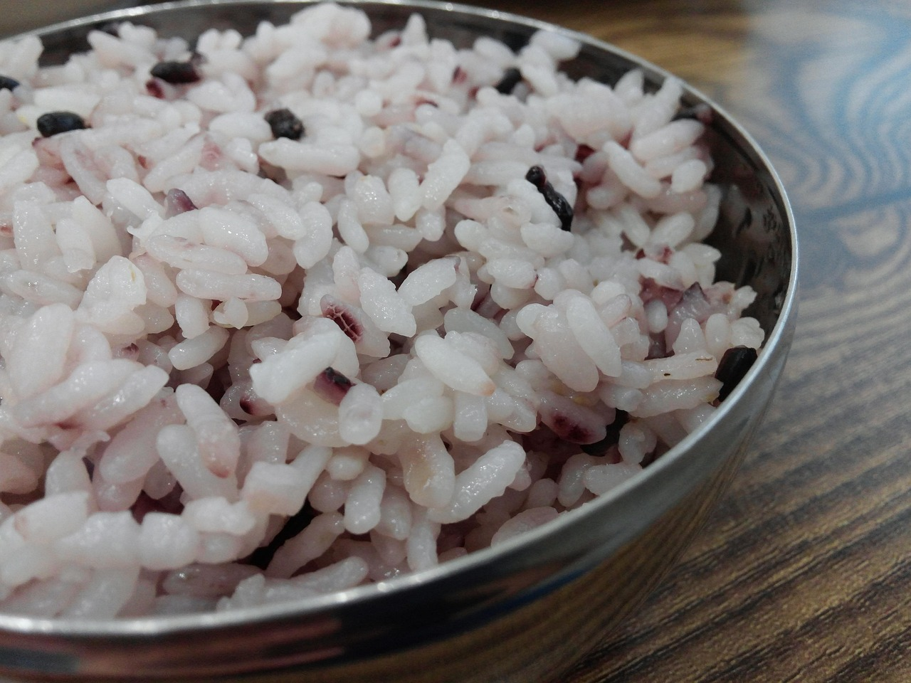

Microwave Rice Recipe
Cook this amazing microwave rice with our recipe!
Follow instructions below to cook this amazing meal.
Ingredients
- Rice
- Water
- Fat
- Salt
Steps
- Rinse and drain the rice, place it in a microwave-safe bowl, and add the remaining ingredients.
- Microwave the rice uncovered until the water is mostly absorbed. Cover tightly, then microwave again until the rice is fully absorbed.
- Let stand, covered, for six minutes. Uncover and fluff the rice with a fork.